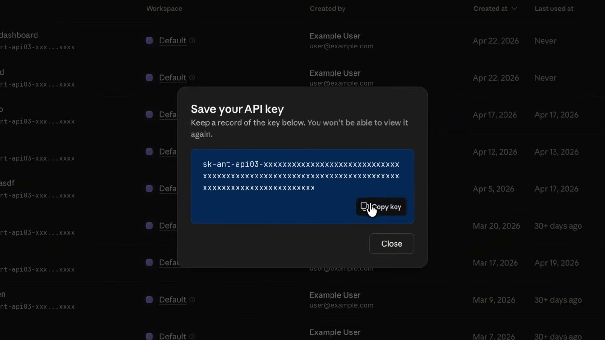
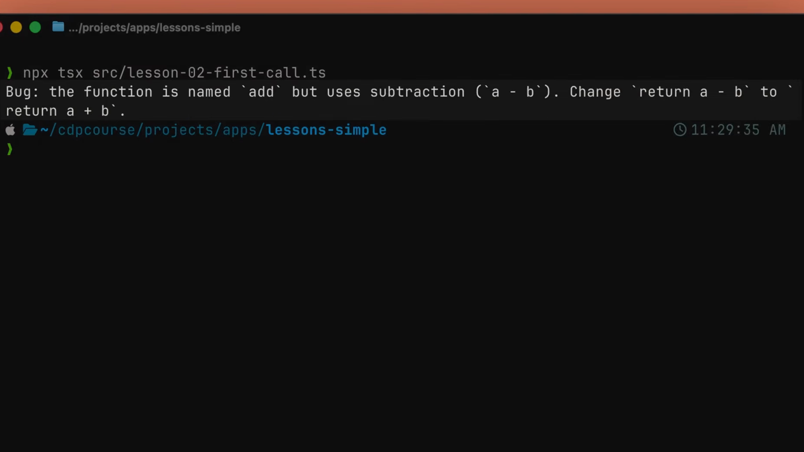
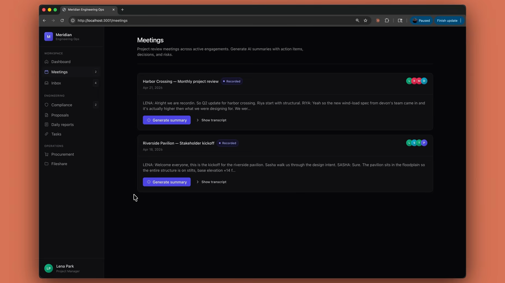

Первый запрос к API
Чему научитесь
Видео 2:25 и текст урока
К концу урока вы сможете:
- собрать запрос через
messages.create: модель, лимит токенов и список сообщений; - хранить API-ключ вне исходного кода и задавать роль Claude системным промптом;
- читать ответ правильно: перебирать блоки
contentи проверять их тип.
Видео и текст урока.
Поздороваться с Claude, может, и приятно, но пользы от этого немного. В этом уроке мы отправим Claude настоящую задачу и получим в ответ структурированный разбор — и всё это чуть меньше чем в 20 строках кода.
Подготовка
Сначала получите API-ключ на platform.claude.com. Перед первым запросом проверьте, что на счёте есть средства: это видно на странице Billing в Claude Console. Если средств нет, пополните баланс там же.

Сохраните ключ в файле .env.local, чтобы он не попал в систему контроля версий. Ключи утекают на GitHub именно тогда, когда их вписывают прямо в исходный код, поэтому держите их в файлах окружения.
Затем установите SDK:
npm install @anthropic-ai/sdk
Из чего состоит запрос
Каждый вызов API проходит через функцию messages.create. В ней вы указываете три вещи:
- модель — какая модель Claude обработает запрос;
- лимит токенов (
max_tokens) — верхнюю границу длины ответа; - список сообщений — объекты с ролью
userилиassistant, устроенные примерно так же, как обычный диалог с Claude в других местах.
Вот самый простой вариант:
import Anthropic from "@anthropic-ai/sdk";
const client = new Anthropic();
const msg = await client.messages.create({
model: "claude-sonnet-5",
max_tokens: 2048,
messages: [{
role: "user",
content: "Hello, Claude",
}],
});
Настоящий пример: ревью кода с ошибкой
Дадим Claude задачу поинтереснее, чем «hello». Покажем ему код с ошибкой и попросим сделать ревью. Вот всё целиком — один файл, около 20 строк кода:
import Anthropic from "@anthropic-ai/sdk";
const client = new Anthropic();
const buggyCode = `
function add(a, b) {
return a - b;
}
`;
const response = await client.messages.create({
model: "claude-sonnet-5",
max_tokens: 2048,
system: "You are a terse senior code reviewer. Give feedback in one paragraph.",
messages: [
{ role: "user", content: `Review this code:\n${buggyCode}` },
],
});
for (const block of response.content) {
if (block.type === "text") {
console.log(block.text);
}
}
Здесь стоит обратить внимание на две вещи:
- Системный промпт (
system) — здесь задаётся роль, в которой выступает Claude. Мне нужен немногословный опытный ревьюер, а не болтливый, — так я прямо и пишу. message.contentв ответе — это массив блоков, а не строка. В простом текстовом ответе блок обычно один, с типомtext, но Claude может вернуть и несколько блоков — текст, вызовы инструментов, thinking, — поэтому мы всегда перебираем их в цикле и проверяем тип.
Запустите скрипт — Claude заметит, что add вычитает, и скажет об этом одним абзацем. Вот и всё. Это и есть весь вызов API.

return a + b.От скрипта к продукту
В настоящем продукте тот же вызов messages.create лежит, например, в основе эндпоинта, который составляет краткую сводку. Достаёте из базы данных расшифровку встречи, передаёте её Claude с системным промптом «extract insights and risks», сохраняете результат обратно в ту же строку таблицы и возвращаете в интерфейс. Это тот же самый вызов, только обёрнутый в обработчик маршрута (route handler).

Итог
- Первый вызов API — это функция
messages.createс моделью, лимитом токенов и сообщениями. - Храните API-ключ в файле
.env.local, чтобы он не попал в систему контроля версий. - Добавьте системный промпт, чтобы задать поведение Claude.
contentответа — массив блоков: перебирайте их и проверяйтеtypeкаждого.- Всё дальнейшее строится на этой схеме.
Дальше
Следующий урок — «Как выбрать модель»: чем отличаются модели Claude и как выбор сказывается и на качестве ответов, и на стоимости.
Оригинал урока: Your first API call.